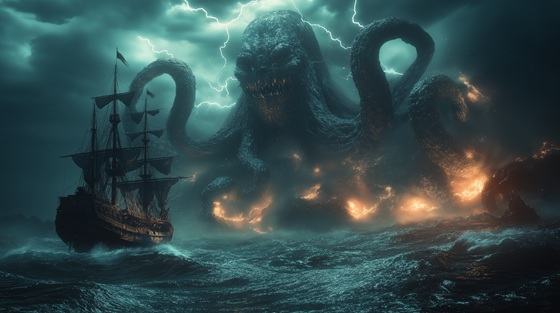

"Sea of Monstrous Shadows" plunges into the terrifying depths of Sinbad the Sailor’s second voyage. Facing gigantic sea creatures, treacherous currents, and the haunting abyss, Sinbad confronts the primal fear of the unknown ocean. This track embodies the tension, danger, and raw power of mythic seas, blending darkness with relentless courage. Every wave, every shadow, tests the limits of the sailor’s bravery, making survival a battle of mind, skill, and will.
Sea of Monstrous Shadows
Dark waves rise like giants in the night,
The moon hides its face, devoured by fright.
Shadows slither beneath the foam,
The ocean groans, no place feels like home.
Eyes in the deep, a hunger untamed,
A sailor’s courage now tested and named.
Lightning cracks across the sky,
Monsters of the deep will not pass by.
Sea of monstrous shadows, I ride your wrath,
Through endless terror, I forge my path.
Tentacles and teeth, the abyss calls,
Yet I stand unbroken, against your walls.
Storm-tossed deck, the timbers moan,
A thousand fates in the depths unknown.
Leviathans stir with a silent scream,
The nightmare of water, the sailor’s dream.
Wind howls like spirits of the lost,
Every second a coin flipped and tossed.
Raging waves, the darkness grows,
Into the maw where no light goes.
Sea of monstrous shadows, I ride your wrath,
Through endless terror, I forge my path.
Tentacles and teeth, the abyss calls,
Yet I stand unbroken, against your walls.
Eyes like lanterns pierce the gloom,
A labyrinth of water, a watery tomb.
Rocks rise like teeth from the black,
The wind tears sails, no turning back.
The heart of the ocean beats wild and free,
But courage is stronger, it carries me.
Depths of darkness, whispers of doom,
The sea devours, yet I resume.
Every shadow, every ghostly wave,
Cannot claim the soul I crave.
Sea of monstrous shadows, I ride your wrath,
Through endless terror, I forge my path.
Tentacles and teeth, the abyss calls,
Yet I stand unbroken, against your walls.
The storm recedes, the monsters fade,
But the ocean’s memory will never evade.
Sinbad sails onward, eyes to the night,
Forever chasing the horizon’s light.